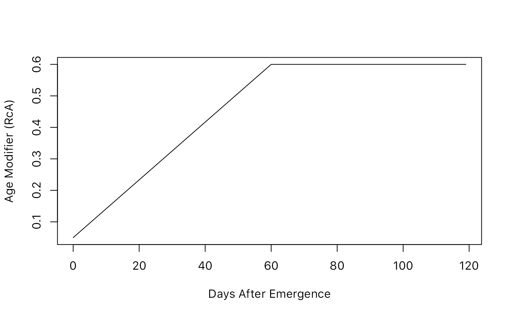
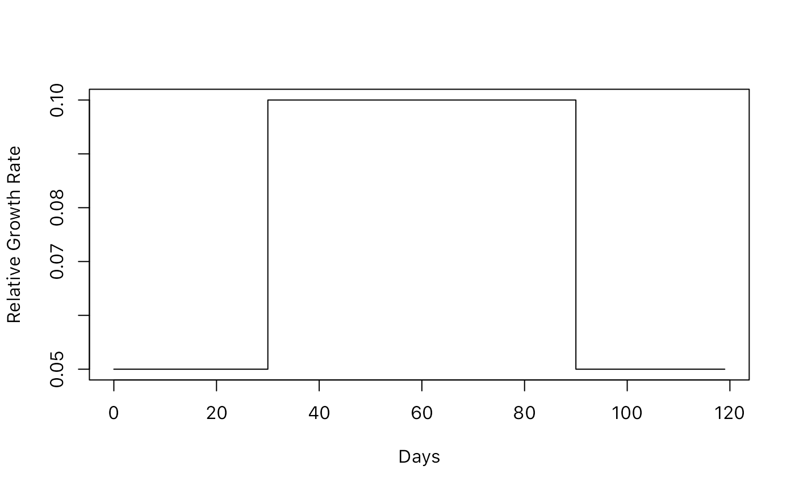
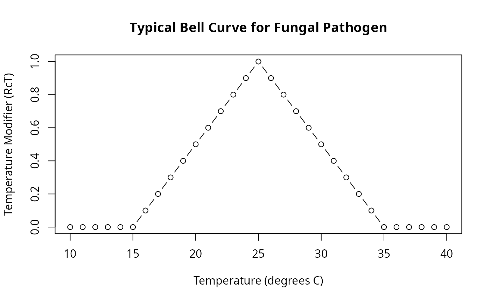
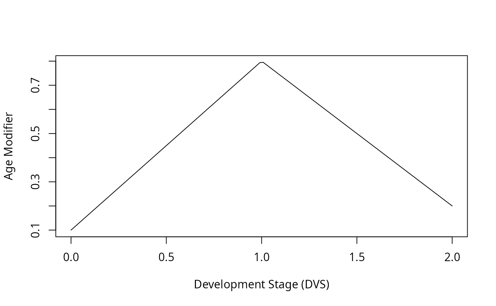

Internal utility that handles flexible parameter input types (scalar, vector, matrix lookup table, or function) and produces daily interpolated values. Enables concise model parameterization where users can specify age-dependent modifiers in multiple convenient formats.
Arguments
- param
Parameter value(s). Can be:
Scalar (numeric length-1): constant value replicated to all ages
Vector (numeric length > 1): must match
length(age_vec)exactlyMatrix or data.frame: 2-column lookup table, column 1 = x (age), column 2 = y (modifier); rows may be unordered or contain duplicates
Function: takes numeric vector (ages) and returns numeric vector (modifiers); result clamped to [0, Inf)
- age_vec
Numeric vector of ages or development stages (DVS) to interpolate over. Length determines output length. Can be:
Days (0-based): 0, 1, 2, ..., 119 (120-day season)
DVS (0-2): 0, 0.05, ..., 2 (development stages)
Temperatures (for function-based params): 10, 15, 20, ..., 35
Value
Numeric vector of length length(age_vec) with interpolated
parameter values. All values are >= 0 (negative results from functions
or extrapolation are clamped to 0).
Details
Error Handling
NULL input aborts
Vector length mismatch aborts
Unsupported class (e.g., character, factor) aborts
Matrix with != 2 columns aborts
Matrix with non-numeric values aborts
NA rows in matrix trigger warning and are removed
Function evaluation errors are caught and abort with message
Negative function results are silently clamped to 0
Performance
For large datasets with repeated lookup tables:
Matrix interpolation is memoised via
digest::digest()content hashingEnables efficient cache reuse even when matrices are reconstructed
See
.memo_fast_interp_approx_digest()for details
Parameter Input Formats
This function accepts four input types:
Scalar (single numeric value):
.interp(0.1, age_vec = 0:119) # Returns c(0.1, 0.1, ..., 0.1)Constant value used for all ages.
Vector (numeric vector):
Must have exact same length as
age_vec. Element-wise correspondence.Matrix (2-column lookup table):
RcA <- rbind(c(0, 0.05), # Age 0 -> modifier 0.05 c(60, 0.6), # Age 60 -> modifier 0.6 c(120, 0.6)) # Age 120 -> modifier 0.6 .interp(RcA, age_vec = 0:119)Column 1 = x-axis (age/DVS), Column 2 = y-axis (modifier 0-1). Uses fast linear interpolation; constant extrapolation at boundaries.
Function:
.interp(function(age) 0.1 + 0.005 * age, age_vec = 0:119)Applied to
age_vec; negative results clamped to 0.
Interpolation Method
Matrix inputs use fast linear interpolation:
Sorts x-values (ages) in ascending order
Removes duplicate x-values (retaining first y-value)
For each output point:
If below minimum x: use \(y[1]\) (constant extrapolation)
If above maximum x: use \(y[n]\) (constant extrapolation)
If between \(x[i]\) and \(x[i+1]\): linear interpolation
Matches stats::approx() with rule = 2 exactly.
Author
Adam H. Sparks, adamhsparks@gmail.com
Examples
# Example 1: Scalar parameter
age <- 0:119
RRG_scalar <- .interp(0.1, age_vec = age)
head(RRG_scalar) # [1] 0.1 0.1 0.1 0.1 0.1 0.1
#> [1] 0.1 0.1 0.1 0.1 0.1 0.1
# Example 2: Lookup table (matrix)
RcA <- rbind(
c(0, 0.05), # Day 0: modifier = 0.05
c(60, 0.6), # Day 60: modifier = 0.6
c(120, 0.6) # Day 120: modifier = 0.6
)
RcA_interp <- .interp(RcA, age_vec = age)
plot(age, RcA_interp, type = "l",
xlab = "Days After Emergence", ylab = "Age Modifier (RcA)")

# Shows ramp-up from 0 to 60 days, plateau after 60 days
# Example 3: Vector parameter (age-dependent growth)
RRG_vec <- c(rep(0.05, 30), rep(0.1, 60), rep(0.05, 30))
RRG_interp <- .interp(RRG_vec, age_vec = age)
plot(age, RRG_interp, type = "s",
xlab = "Days", ylab = "Relative Growth Rate")

# Shows different growth rates for early, mid, and late season
# Example 4: Function-based parameter (temperature-dependent)
# Infection rate increases from 15 to 25 degrees C, then decreases
RcT_fn <- function(temp) {
ifelse(temp < 15, 0,
ifelse(temp >= 15 & temp < 25, (temp - 15) / 10,
ifelse(temp <= 35, 1 - (temp - 25) / 10, 0)))
}
temps <- seq(10, 40, by = 1)
RcT_interp <- .interp(RcT_fn, age_vec = temps)
plot(temps, RcT_interp, type = "b",
xlab = "Temperature (degrees C)", ylab = "Temperature Modifier (RcT)",
main = "Typical Bell Curve for Fungal Pathogen")

# Example 5: Matrix with unsorted rows and duplicates
# (function handles reordering and deduplication automatically)
RcA_messy <- rbind(
c(60, 0.4), # Out of order
c(0, 0.05),
c(60, 0.6), # Duplicate x (second value wins)
c(120, 0.6)
)
RcA_clean <- .interp(RcA_messy, age_vec = age)
# Internally sorted to: 0->0.05, 60->0.6, 120->0.6
# Example 6: Comparing DVS-based vs day-based aging
dvs <- seq(0, 2, length.out = 120) # DVS 0-2 over 120 days
RcA_dvs <- rbind(
c(0.0, 0.1), # DVS 0 (emergence)
c(1.0, 0.8), # DVS 1 (active growth)
c(2.0, 0.2) # DVS 2 (maturity/senescence)
)
RcA_interp_dvs <- .interp(RcA_dvs, age_vec = dvs)
plot(dvs, RcA_interp_dvs, type = "l",
xlab = "Development Stage (DVS)", ylab = "Age Modifier")
